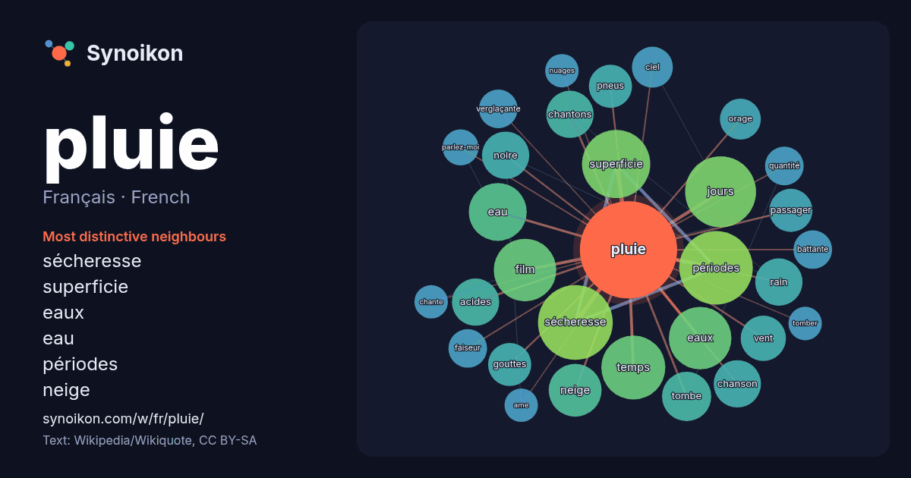

Français · French · word of the day list
pluie
“rain” · The words found around it in 675 instances from French Wikipedia, Wikiquote.

Most distinctive neighbours
- sécheresse 30×
- superficie 22×
- eaux 18×
- eau 17×
- périodes 15×
- neige 15×
- chantons 13×
- rain 13×
- acides 12×
- jours 12×
- tombe 12×
- noire 11×
- passager 11×
- gouttes 11×
- pneus 11×
- vent 10×
- film 10×
- orage 9.8×
- temps 9.7×
- verglaçante 9.0×
× = how many times more often than in general French Wikipedia text.
Most frequent neighbours
- sécheresse 30
- périodes 29
- jours 27
- superficie 25
- temps 22
- eaux 21
- film 21
- eau 18
- neige 15
- tombe 13
- acides 12
- chanson 12
- chantons 12
- forme 12
- noire 12
- rain 12
- vent 11
- gouttes 10
- paris 10
- passager 10
In context
- « Goutte de pluie » redirige ici. Pour le gâteau, voir Gâteau goutte de pluie. Pluie La pluie est un phénomène naturel par lequel des gouttes d'eau tombent Wikipedia snippets · Pluie
- Acidification. L'expression « pluie acide » désigne toute forme de précipitations anormalement acides. On distingue les retombées humides (pluie, neige, brouillard Wikipedia snippets · Pluie acide
- Même la pluie Pour plus de détails, voir Fiche technique et Distribution. Même la pluie (También la lluvia) est un film dramatique hispano-franco-mexicain Wikipedia snippets · Même la pluie
- la température est alors inférieure à 0 °C. Les témoignages de pluie animale, de pluie de sang, ou de chute d'objets organiques divers abondent dans la Wikipedia snippets · Pluie d'animaux
- Un soir de pluie Un soir de pluie est une chanson du duo français « Blues Trottoir » parue en 1987. Elle est écrite par Clémence Lhomme et composée par Wikipedia snippets · Un soir de pluie
- Pluie, Vapeur et Vitesse Le Grand Chemin de fer de l'Ouest Pluie, Vapeur et Vitesse – Le Grand Chemin de fer de l'Ouest (en anglais : Rain, Steam and … Wikipedia snippets · Pluie, Vapeur et Vitesse
- visible dans la direction opposée au Soleil quand il brille pendant la pluie. C'est un arc de cercle coloré d'un dégradé de couleurs. Un arc-en-ciel Wikipedia snippets · Arc-en-ciel
- bâton de pluie à la verticale puis de le retourner tel un sablier pour reproduire le bruit de la pluie. Pour donner un effet réaliste de pluie, plusieurs Wikipedia snippets · Bâton de pluie
More French words
- art
- automne
- carte
- chanson
- chat
- chemin
- cheval
- chien
- climat
- cloche
- cœur
- dieu
- désert
- eau
- famille
- forêt
- histoire
- hiver
- horloge
- jardin
- langue
- miel
- miroir
- monnaie
- montagne
- mort
- mère
- nature
- nourriture
- ombre
- pain
- pont
- pouvoir
- printemps
- santé
- science
- sel
- silence
- temps
- tempête
- thé
- train
- travail
- trésor
- vie
- ville
- vérité
- étoile
- île
Precomputed on 2026-10-09 with default settings (±5 words, medium corpus). The interactive map can refresh it with live data.